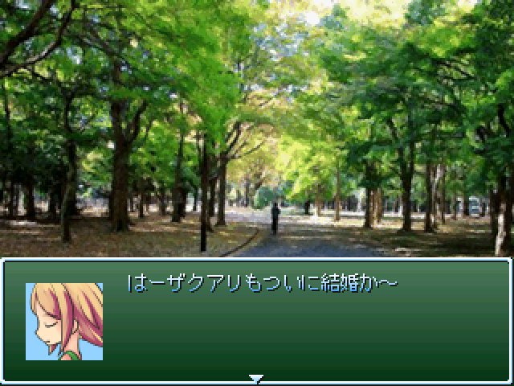

保存資料：2019-03-30の公開ページを再生しています。原HTMLと画像の載荷は保存済みです。
 |
|
| 作者：ザクアリ | |
| ツクール：2000 | |
| ジャンル：結婚は人生の墓場 | |
| 配信/投稿：添付テキスト見な | |
| 作者コメント： ザックとアリサが結婚した―― 二人を祝福するアルベルトとミーアは、自分たちが今まで浮いた話と全くの無縁であったことに気づく。 将来に不安を覚えた二人は、試しに付き合ってみることを決意するのであった。 「人を好きになるということがよくわからない」そんな二人がたどり着く着地点とは！？ ご期待したければご期待ください。でもご期待してくれない方が作る方は気が楽かも。 ※本作品はタイトルを募集しております。なんかそれっぽいの思いついたら提供してくだされ。 |
|
| 管理人コメント： 浮いた話のない身としては二人を応援したくなります |
|
| ダウンロード(0.00MB) / 感想掲示板 | |
| 前の作品 / 次の作品 / TOPへ戻る | |